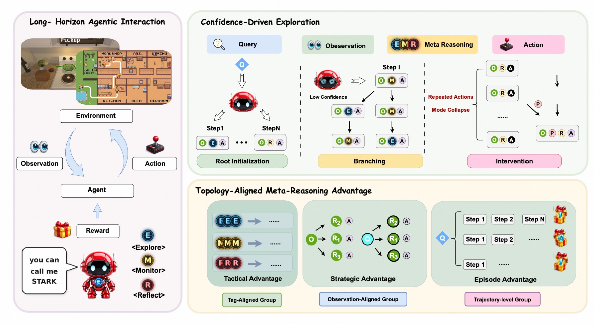
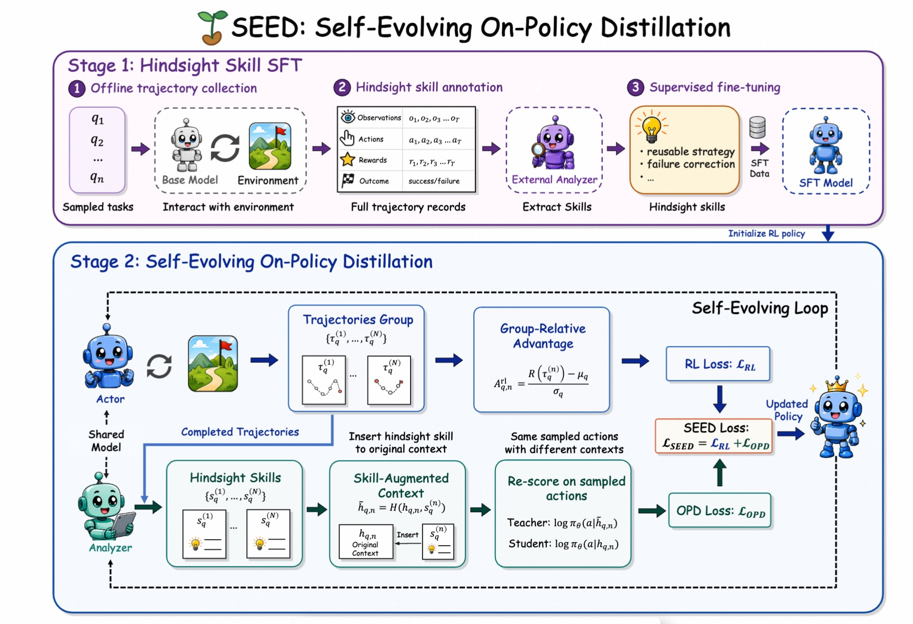
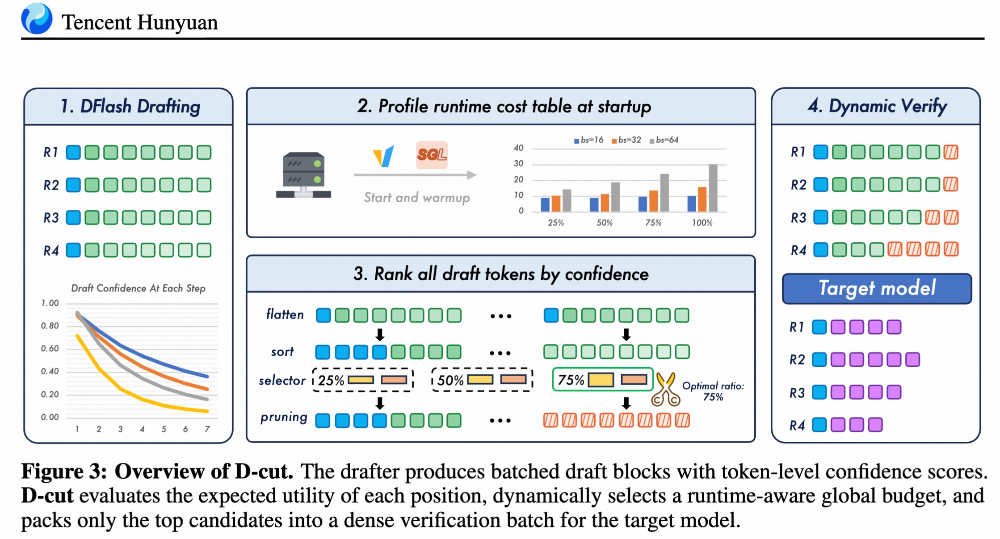
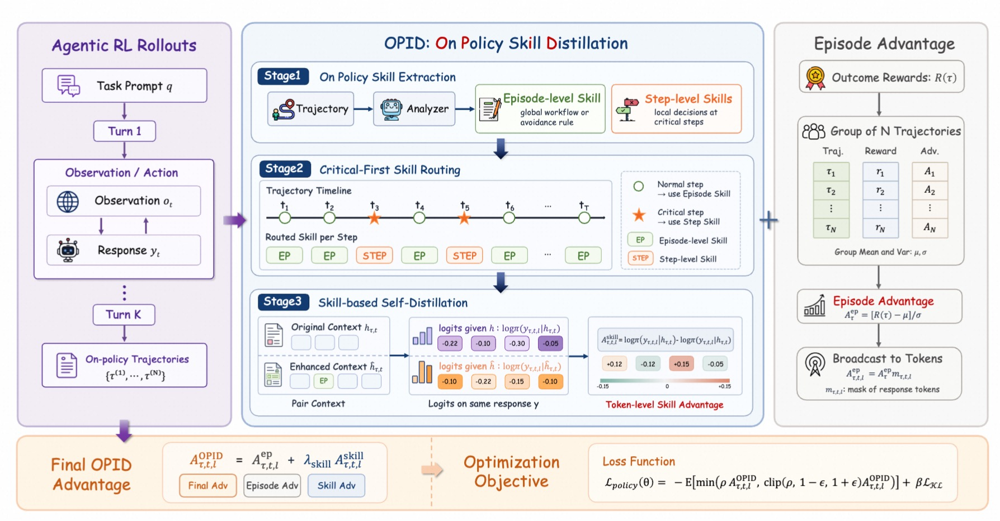
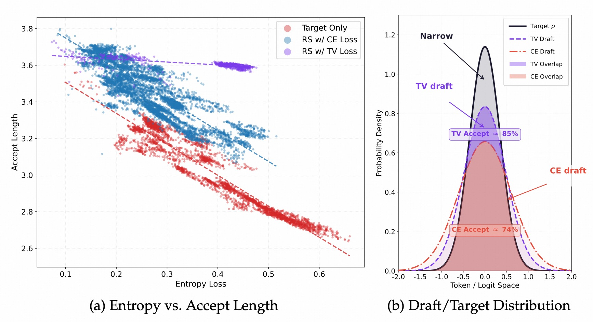
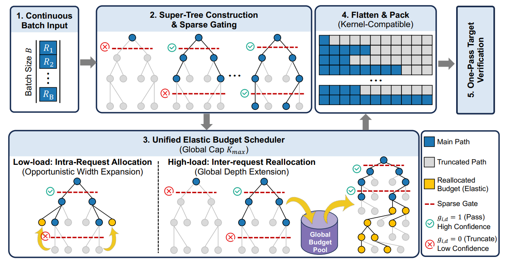
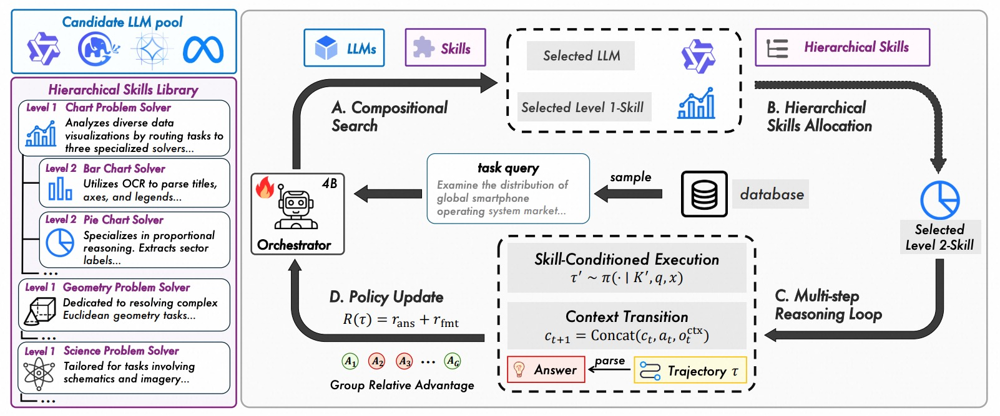
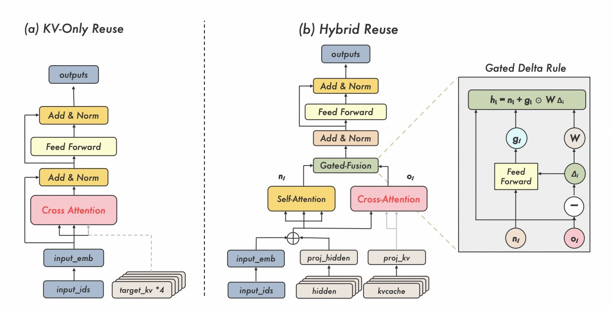
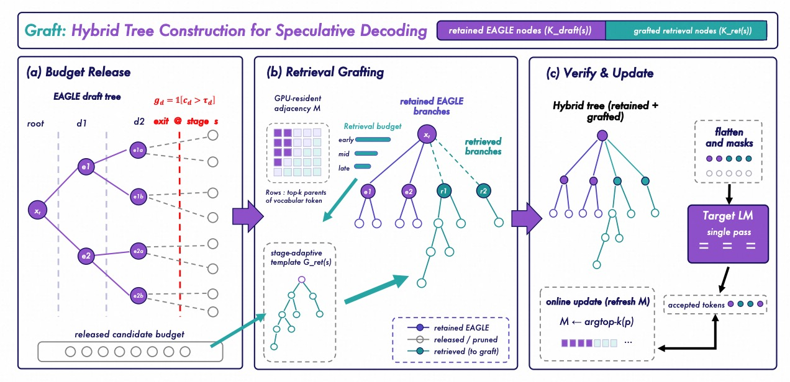

STARK: Strategic Advantage Reinforcement with Confidence-Driven Exploration for Long-Horizon Agentic Learning
EMNLP 2026 Main Conference

Direct Ph.D. Student · Zhejiang University
Hey, I'm Yuhao Shen, a direct PhD student at the College of Control Science and Engineering, Zhejiang University, advised by Prof. Cong Wang. I also received my B.E. degree from Zhejiang University.
My research lies in MLSys, LLM Inference, AI Infrastructure, and Edge Computing. Over the past two years, I have been deeply engaged in the field of Speculative Decoding. I was previously a research intern at Qwen Application and received an internship offer from the Tencent Hunyuan Qingyun Project. Currently, I work on RL Infra in the Tongyi Qwen Infra Team, where I contributed to MTP/RL infra optimization for Qwen3.6 - Qwen4.0. Outside academia, I enjoy playing basketball, video games, and photography.

|
Zhejiang University, Hangzhou, China Direct Ph.D. in Control Science and Engineering, 2024 - 2029 Advisor: Cong Wang |
|
|
Zhejiang University, Hangzhou, China Bachelor of Engineering in Control Science and Engineering, 2020 - 2024 Advisor: Cong Wang |

EMNLP 2026 Main Conference




arXiv (2026)

ICML Oral/Spotlight, 2026







ACL 2026 Findings


IEEE 45th International Conference on Distributed Computing Systems (ICDCS), 2025

IEEE Transactions on Neural Networks and Learning Systems, 2024

European Conference on Computer Vision (ECCV), 2026


Engineering
Temperature sampling support for DeepSeek-V4's block-level speculative decoding path, with clarified rejection sampling behavior.
Compatibility with DP Attention, CUDA Graph, and cooperative execution on idle DP ranks.
A lightweight high-concurrency speculative decoding system with paged attention, tensor parallelism, FlashAttention, and CUDA Graph.
Recognition

|
Research Intern, Qwen Foundation Model May. 2026 - Present Topic: Speculative Decoding, RL Infra Advisor: Yucheng Li, Huiqiang Jiang Hangzhou, China |
|
|
Research Intern, Qwen Application Nov. 2025 - May. 2026 Topic: Speculative Decoding, AI Infra Advisor: Ye Shuang, Jun Dai, Lei Chen Hangzhou, China |